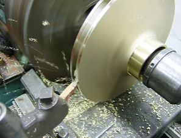
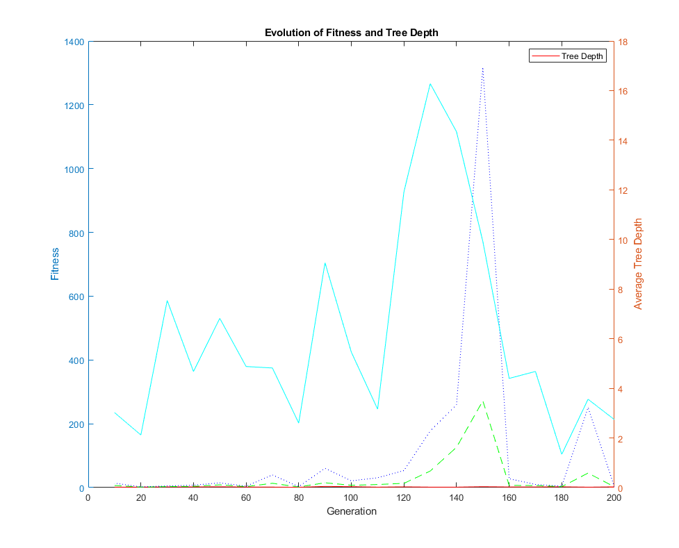
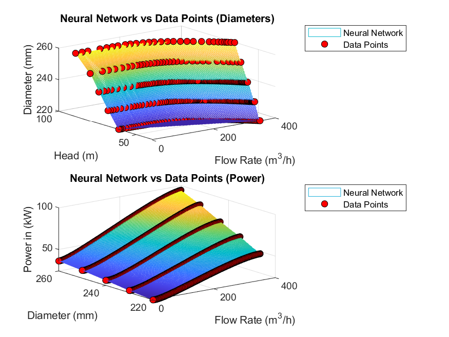

this blog will contian all of our writings related to the project


matlab_translation_symbolic_regression_18.m
This document is intended to be a simpler alternative for translating symbolic regression code from Python to MATLAB. It focuses on a more straightforward approach, as translating the Node and Tree classes from the Python code on GitHub (by dyckia, titled “Genetic-Programming-Polynomial-Regression”) proved challenging.
a complete example working matlab file matlab_translation_symbolic_regression_18.m will be sent with this document via whatsapp.
later i will upload it to github with proper permenant link.
here is link the translated file : - matlab_translation_symbolic_regression_18.m
